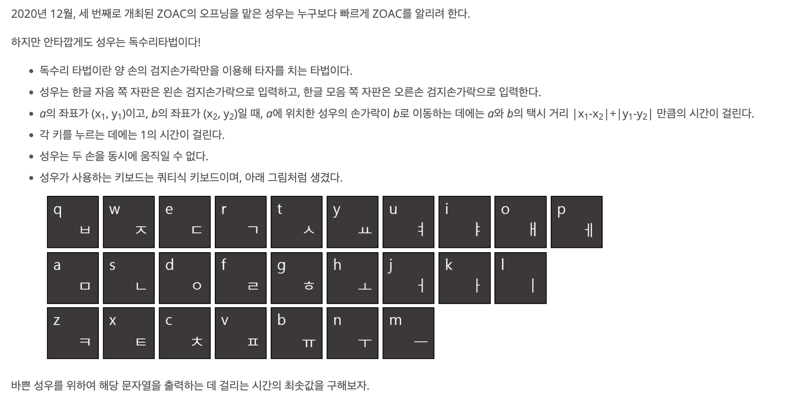
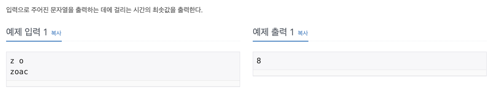
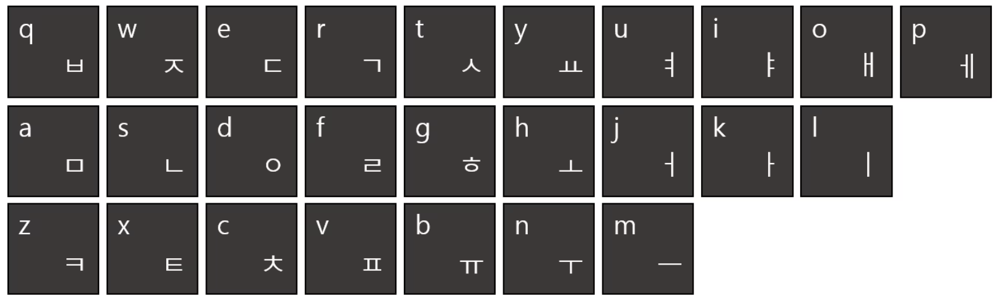
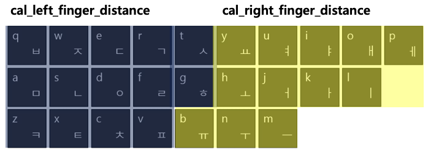
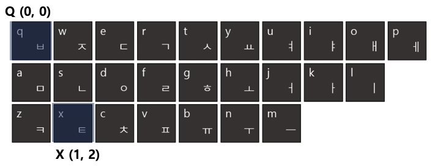

#INFO
알고리즘 유형 : 시뮬레이션 & 구현
난이도 : SILVER4
 
#SOLVE
문제에서 주어진 조건대로 차근차근 구현하면 되는 비교적 간단한 구현 문제이다.
우선 키보드 자판을 저장할 2차원 배열을 선언한 뒤, 정보를 저장한다.

/* value */
vector<vector<char> > board(3);
const vector<char> line1 = {'q', 'w', 'e', 'r', 't', 'y', 'u', 'i', 'o', 'p'};
const vector<char> line2 = {'a', 's', 'd', 'f', 'g', 'h', 'j', 'k', 'l'};
const vector<char> line3 = {'z', 'x', 'c', 'v', 'b', 'n', 'm'};
다음으로 처음 왼손 검지 손가락 오른손 검지 손가락 알파벳 위치를 입력받은 뒤 변수에 저장한다.
// current_x1, current_y1 : 왼손 검지 손가락 위치 (x1, y1)
// current_x2, current_y2 : 오른손 검지 손가락 위치 (x2, y2)
int current_x1, current_y1, current_x2, current_y2;
char sL, sR;
cin >> sL >> sR;
// #2 초기 왼손, 오른손 위치 셋팅
for (int i = 0; i < board.size(); i++) {
for (int j = 0; j < board[i].size(); j++) {
if (sL == board[i][j]) {
current_x1 = i;
current_y1 = j;
}
if (sR == board[i][j]) {
current_x2 = i;
current_y2 = j;
}
}
}
다음으로 입력받은 문자열을 기반으로 cal_left_finger_distance 함수를 호출할지 cal_right_finger_distance 함수를 호출할지 여부를 결정한다.
문제에서 제시한 조건에 따르면 한글 자판 기준 모음으로 된 키보드 자판을 눌렀을 경우 cal_left_finger_distance 함수를 , 자음으로 된 키보드 자판을 눌렀을 경우 cal_right_finger_distance 함수를 호출한다.
단, 주의해야할 부분은 자판을 누르는 시간 또한 고려해 주어야 한다.

// #3 메인 로직
int res_distance = 0;
string command;
cin >> command;
for (int i = 0; i < command.size(); i++) {
if (command[i] == 'q' || command[i] == 'w' || command[i] == 'e' || command[i] == 'r' || command[i] == 't' ||
command[i] == 'a' || command[i] == 's' || command[i] == 'd' || command[i] == 'f' || command[i] == 'g' ||
command[i] == 'z' || command[i] == 'x' || command[i] == 'c' || command[i] == 'v') {
res_distance += cal_left_finger_distance(command[i]); // 이동시간
res_distance++; // 누르는시간
}
else {
res_distance += cal_right_finger_distance(command[i]);
res_distance++;
}
}
cal 메서드 내부 로직이다.
단순히 현재 위치의 x, y좌표와 입력받은 알파벳의 x, y좌표의 거리를 계산해 반환해 주는 함수이다.
현재 왼손 검지 손가락이 q 위치에 있고 cal_left_finger_distance 함수로 알파벳 "x"가 입력값으로 들어왔다고 가정해 보자.
그렇다면 q에서 x는 x좌표로 1만큼 Y좌표로 -2만큼 떨어져 있기에 총 이동 거리는 |0 - 1| + |0 - 2| = 3 이 된다.

int cal_left_finger_distance(char to) {
int distance = 0;
for (int i = 0; i < board.size(); i++) {
for (int j = 0; j < board[i].size(); j++) {
if (board[i][j] == to) {
distance = abs(current_x1 - i) + abs(current_y1 - j);
current_x1 = i;
current_y1 = j;
return distance;
}
}
}
return distance;
}
int cal_right_finger_distance(char to) {
int distance = 0;
for (int i = 0; i < board.size(); i++) {
for (int j = 0; j < board[i].size(); j++) {
if (board[i][j] == to) {
distance = abs(current_x2 - i) + abs(current_y2 - j);
current_x2 = i;
current_y2 = j;
return distance;
}
}
}
return distance;
}
#C++
https://github.com/novvvv/PS/blob/main/BOJ/C%2B%2B/2024/20436.cpp